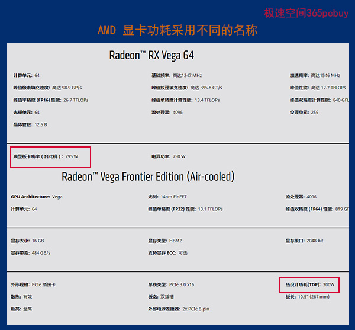
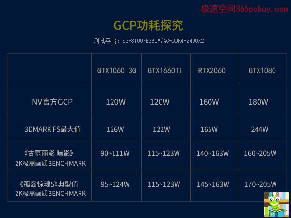
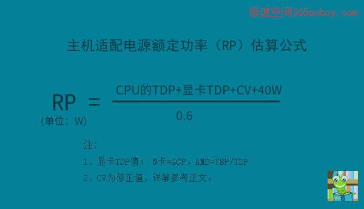
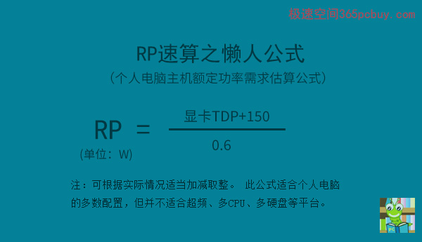

前言：
台式机需要多少瓦电源？此文将给出两个测算公式。由于显卡是主机中的耗电大户，计算的关键步骤是要算出显卡的满载功率，而满载功率并不是名震寰宇的TDP。
正文：
显卡的功耗名称目前主要有三个：TDP、TBP和GCP，其中TDP入行最早，名气最大，另外两个属于近几年的崭露头角的新人。AMD虽然找了新欢TBP（Typical Board Power典型板卡功耗），但和老情人TDP还在拉拉扯扯，而NV已经彻底抛弃了旧爱，选择了GCP。
TDP（Thermal Design Power散热设计功耗），是反应一颗处理器（CPU或GPU）热量释放的指标，单位为瓦。早期的电脑CPU（如80386，1995年）是没有散热器的，大湿站长就是在这一年安装了自己第一台电脑，后来的80486处理器，多数也同样如此，至多贴个散热片。到了奔腾时代（1999年），TDP逐渐被厂商重视，著名的奔腾MMX/166的TDP为13.1W，奔腾PRO 200是35W。
TBP：AMD目前脚踏两只船，游戏显卡采用了一个新称呼：TBP（Typical Board Power典型板卡功耗），而在专业显卡中仍然抱着TDP不放手。

图一
上图来至于AMD官网截图，即使是兄弟型号，显卡的功耗名称也并没有统一起来。
GCP/GSP：NVIDIA早期也采用TDP，后来则换成GCP（Graphics Card Power显卡功耗），这名称非常直白。对笔记本显卡，由于其并没有”卡“的形状，则称呼为：GSP（Graphics Subsystem Power 图形子系统功耗）。
TDP、TBP、GCP/GSP的数值和显卡的满载功率是有偏差的，下面一起来探究这个偏差有多大。
实测4款N卡，下图。

图二
测试解读
根据一些实验证明，3DMARK的峰值高于FURMARK，因此这里我们放弃了FURMARK测试。
满载功耗并不是峰值功耗，峰值功耗需要在特定场景才能跑出来，通常在一瞬间达到，时间也极其短暂，如GTX1080的峰值功耗为244W，GCP=180W，超出了64W，实际还可能不止244W，可能峰值时间太短（以毫秒为单位），普通功耗仪无法测出，因此，峰值功耗不宜用来估算整机功耗。
满载功耗可以看做是在极高负载下的功耗值，它并非一瞬间出现，而是能多次摸到这个高度。《古墓丽影 暗影》和《孤岛惊魂5》对显卡要求都非常高，BENCHMARK可以让显卡处于极高负载状态下，GTX1060 3G、GTX1660Ti、RTX2060的GCP值就在真实功耗的上限位置，GTX1080非公版红龙，核心频率较高，超出25W算在合理范围。
根据专业网站的测试数据，合并以上测试，分析后给出如下表格：
|
N卡满载功耗和GCP功耗值对比表 |
||
| 显卡型号（非公版桌面版） | 满载功耗值（W） | NV官方的公版 GCP功耗值（W） |
| GTX1050 | 76 | 75 |
| GTX1060（3G） | 124（实测） | 120 |
| GTX1060 （6G） | 121 | 120 |
|
GTX1070 |
181 | 150 |
| GTX1070Ti | 189 | 180 |
| GTX1080 | 205（实测） | 180 |
| GTX1080Ti | 297 | 250 |
| GTX1650 | 87 | 75 |
| GTX1660 | 121 | 120 |
| GTX1660Ti | 123（实测） | 120 |
| RTX2060 | 165（实测） | 160 |
| RTX2070 | 234 | 185W（FE） |
| RTX2080 | 270W | 225W（FE） |
| RTX2080Ti | 294W | 260W（FE） |
|
注：由于非公版之间频率也有差异，会导致满载功耗值出现一定差异。 |
||
由此可以得出以下结论：
50/60级别的满载功耗约等于GCP值，70/80级别的满载功耗稍高于GCP值，幅度通常在50W以内。
这条结论可以用来估算N卡的满载功耗。
再看AMD这边，TBP值和真实满载功耗差距几何？
根据目前一些测试，统计如下：
|
A卡满载功耗和TBP功耗值对比表 |
||
| 显卡型号（非公版桌面版） | 满载功耗值（W） | TBP功耗值（W） |
|
RX570 |
187 | 150 |
| RX580 | 234 | 185 |
| RX590 | 244 | -- |
| RX VEGA 56（公版） | 237 | 210 |
| RX VEGA 64（公版） | 327 | 295 |
| Redeon VII（公版） | 350 | 300 |
从上表看出，中档以上的A卡，其满载功耗也稍高于TBP值，幅度通常在50W以内。
满载功耗略高于官方给出的标准值，是多种原因共同导致。原因之一是对”满载“”最大“等定义上的偏差，其二是采用的非公版频率略高。其三是驱动不同也能导致一些差异。
我个人推测，无论是NV的GCP、还是AMD的TBP，很可能就来至于TDP的改名而已，虽然TDP并不是电功耗，但是由于其数值和极高负载时的真实功耗接近，改个名字更能贴近用户，因为TDP更多的时候是给散热器厂家的标准，而用户更关心实际功率，并以此为依据选择电源。
既然偏离值都不大，我们就有了主机电源额定功率（RP：rated power）的估算公式：

图三
公式解读
1、CPU TDP：是指CPU在最大负载时候释放的热量，并不是真实功耗。理论上说，TDP是小于CPU真实峰值功耗。但是，可以近似地把TDP的值看做日常重度负载下的功耗值，因此，可以借用TDP这一指标，去估算主机的满载功耗。需注意的是，这里的“满载”含义，是指不超频、不用专用程序去压榨。
2、CV修正值：显卡TDP为75W时，CV=0（为什么为0上文已有验证），显卡TDP大于75W时候，可取值15W，Nvidia的16/20系列和AMD VEGA系列考虑整体主机配置会略高，再加30W，此时CV=15+30=45W。对于超过2个机械盘的多硬盘主机（如服务器），CV值还将上调。
3、其余配件功耗打包估算为40W，参考值：主板 6W、8G-DDR4 2W/根、1TB机械硬盘：8W/个、固态硬盘：2W/个，外加光驱、键鼠、散热器和若干机箱风扇
4、/0.6：在满载时仍然保留40%冗余功率。
5、没有独显可把显卡TDP看做为0，实在不放心也可以再加个50W。
此公式为大湿自创，并非什么权威公式，用户可以根据实际情况做一些调整，适当小点或者大点都可以，如算出来时683W，用650W电源，算出来是741W，用额定750W都可以。
验证：
GTX1050/GTX1050Ti ：TDP65W 官方建议300W电源
（75+65+40）/0.6=300W 和官方推荐功率精准一致。
GTX1060：TDP65W 官方建议400W电源
（120+15+65+40）/0.6=400W 和官方推荐功率精准一致。
GTX1070Ti/GTX1080 ：TDP180W，官方建议500W
（180+15+65+40）/0.6=500 和官方推荐功率精准一致。
GTX1080Ti：TDP250W，官方建议600W
（180+15+65+40）/0.6=616W 符合。
GTX1660/GTX1660Ti ：TDP65W，官方推荐450W
（120+45+65+40）/0.6=450W 和官方推荐功率精准一致。
RTX2060：TDP160W，官方推荐500W
（160+45+65+40）/0.6=516W 符合
RTX2070：TDP185W 官方推荐550W
（185+45+65+40）/0.6=558W 符合。
RTX2080
TDP：225W 官方推荐650W
（225+45+65+40）/0.6=625W 符合。
RTX2080Ti
TDP：225W 官方推荐650W
（260+45+65+40）/0.6=683W 符合
AMD这边用这个公式还准不准呢？
RX570 官方推荐450W
（150+15+65+40）/0.6=450W 和官方推荐功率精准一致。
（180+15+65+40）/0.6=500W 和官方推荐功率精准一致。
（210+45+65+40）/0.6=600W 低于官方值50W，仍在合理区间。
（295+45+65+40）/0.6=741W 符合。
以上16款型号，除了RX Vega56这款偏离了50W，其余15款均符合官方推荐值，而且，有9款显卡通过此公式计算出来和官方推荐值精准一致。
由于CV修正值的存在，此RP公式的适用范围较大，但相对不太简便。由于我们个人用户通常不会装两个CPU，3、5个机械硬盘，也不会大幅度超频，更不会经常用FPU跑浮点，因此，即使是TDP95W，不超频仍然可按65W计算，同时对CV取较大值（15+30）W。这意味着，此公式可以化简为只根据显卡TDP的单一指标，就可以计算主机适配的电源功率。
因此我们可以偷懒，把图三的公式简化。
其实懒人也有境界之分的，
初级：炒菜太麻烦了，到餐厅吃饭还要走路，喊个外卖。
中级：叠被子太麻烦了，反正晚上睡觉还要盖的。
高级：买电脑还要算功率，好麻烦哟！有没有10秒就能算出来的？
有：

验证：
核显主机，TDP可取0，用（150/0.6）=250W即可。
如选择GTX1650显卡，那么主机适配电源为：（75+150）/0.6=375W，官方推荐300W，超出75W。
如选择GTX1660显卡，那么主机适配电源为：（120+150）/0.6=450W，和官网推荐一致。有用户问，额定400W行不行呢？不超频，选择知名品牌电源，是可以的。如果不放心，多加50W~100W当然是没问题的。
如选择RTX2080显卡，那么主机适配电源为：（225+150）/0.6=625W，取整到600W~650W都是合适的。
电源额定功率过小有质量隐患，过大则性价比下降。
结束语：
懒人公式虽然精确度稍低，但是简单，明确，可根据实际情况加减取整。另外， 买电源一定不能只看额定功率，几十元杂牌的额定500W电源多为虚标，不足为信，就算采用某些特殊办法额定达标，其输出不稳定或者电流不纯净（纹波不合格），会导致其它硬件损坏，有的用户贪图便宜选择伪劣电源，很快硬盘就挂了，然后骂希捷、西数质量差。